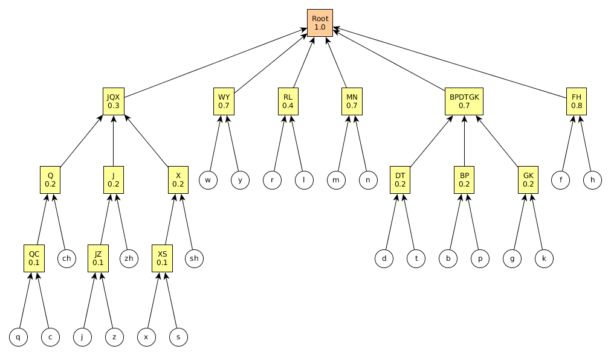
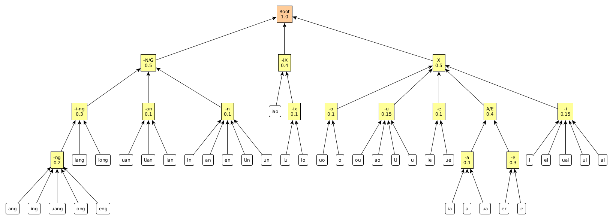

Each character .
Misspelled character .
Distance between each pair:
Then distance between the 2 characters c, c' =
We can use (1 - d) to represent the matching score.
Each character c also has an occurrence frequency, f. The distribution of f follows the famous Zipf's Law, which says that the most frequent char will occur approximately twice as often as the second most frequent char, three times as often as the third most frequent char, etc. In other words, if we plot log(rank order) against log(frequency), we get a straight line.
Now we have 2 things: one is the frequecy or frequency ranking, the other is the distance measure for spelling errors. We need to somehow unify the two measures. There may be more than one way to do it.
Earlier I had used a somewhat ad hoc formula:
A better approach may be Bayesian reasoning. I noticed that the frequency can be regarded as the "prior" probability of a character occurring in any text, without further information. We are given the "observation / data" which is the (possibly erroneous) spelling given by the user, and we want to use this observation to guess what is the user's intended character, ie our "hypothesis".
An easy way to understand and remember Bayes' Law is via this basic rule in probability:
In our case the observation D is the spelling provided by the user. The hypothesis H is the character intended by the user. It is not easy to guess what is the intended character given the possibly erroneous spelling, but it is somwhat easier if we know what is the intended character, and guess the ways in which it can be misspelled — since we already know its correct spelling, and our distance metric gives how far it is from the correct form; we can assign a conditional probability, P(D|H) = P(spelling | character), as a function of the error distance.
P(D|H) may be given by (1.0 - error distance), since we have confined the distance in [0,1]. But we need to avoid the extremal probability values of 0 and 1. (However, conditional probabilities do not need to be normalized to sum to 1. I am still thinking on whether P(D|H) must obey further constraints...)
P(H) is the prior probability of a char, this is same as the character frequency.
P(D) is the prior probability of a spelling. We can deduce this from the character frequencies, converting the characters to their correct spellings, and add up.
We can just scan through the entire set of characters (which is on the order of 10K) with everyone mixed together, calculate the distance of each char with our input char, then calculate the new ranking. Of course the lower ranking ones will be cut off.
This is the classification tree, based on my estimation of which sounds are close to each other (Of course the reader should feel free to improve it):

A similar map has been made for distances between nuclei:

We can assign distances this way:
Each cluster may have N elements, and e is the average distance from the elements to its centroid (smaller e means a more compact cluster). A sub-cluster is represented by its centroid as a single element in the parent cluster.
The distance between 2 leaf elements can be taken to be the e value of their lowest common parent cluster.
We can normalize the e value at the root to 1 (the biggest average distance).
The key here is to deal with the large number of combinatorial variations. In our algorithm for (A) we calculated the distance between the input char and all other chars. We need to save some time this time.
Remember, the multi-char words / phrases (hereby known as "words"), have character segmentations that we already know.
Our input is an unsegmented blob of letters. We could segment them first and match them with existing words, as shown in this diagram:
After segmentation, the number of characters must match, so we are just matching 2 words, char-by-char. This is already amenable to brute-force -- the number of words of a fixed length is on the order of 50K). We could, of course, device more sophisticated algorithms to accelerate the search, but this is not necessary for our purposes.
Notice that we have done "from spelling to words" (用英文字母找詞語), but we could also do "from chars to words containing the chars" (用中文單字找詞語, as long as the characters occur in the target, in that order, but with other chars possibly interspersing).
This is also amenable to brute force.
==============================
In conclusion, all we need is to find the biggest (and most modern) word lists. Users may want to stay subscribed to our web site because they want to have the latest word collections.